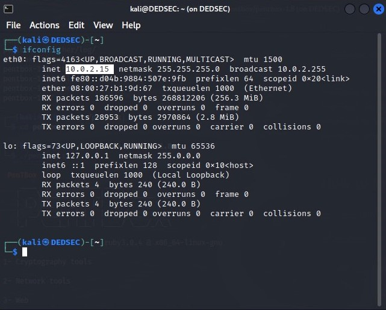
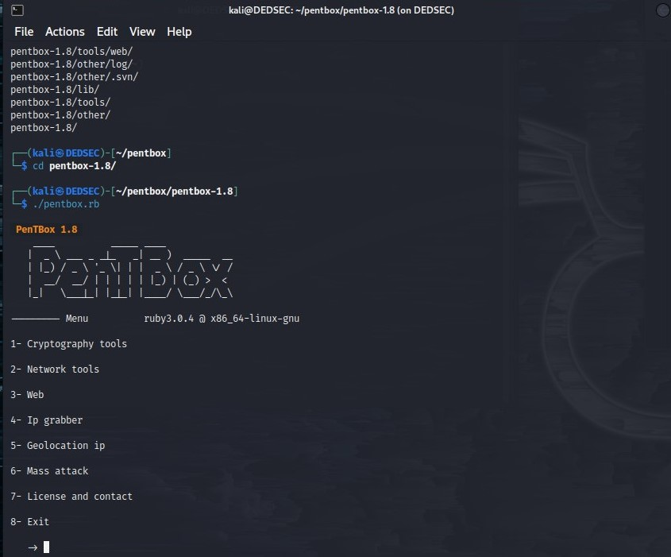
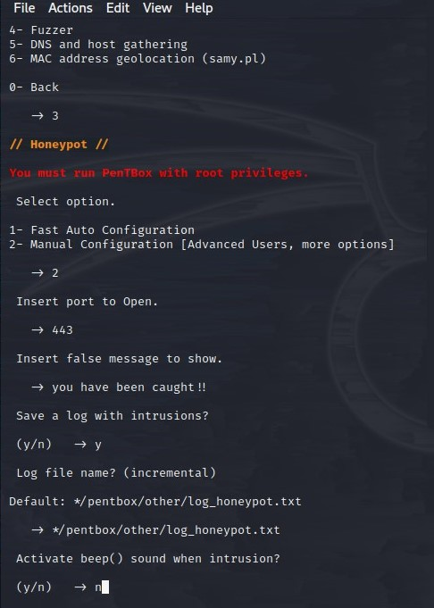
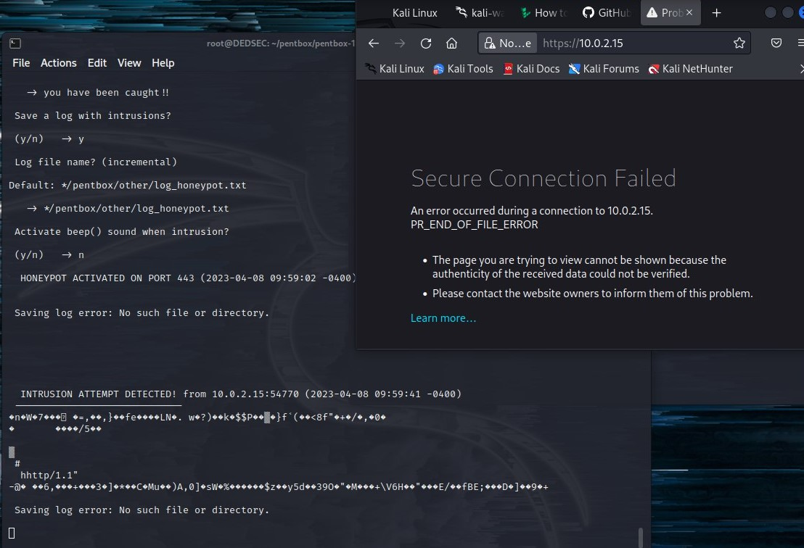

How to know Set Honeypot and trap the attackers ?
Before starting setting our honeypot we need to know our ipconfig , it's amazing how the virtual machine is able to have a different
from the User machine . To know your virtual machine type ifconfig into the terminal,here's a picture showing us my VM(virtual machine) ipconfig.

What is Honeypot ?
In this activity we will use Pentbox which is a safety kit containing various tools for streamlining PenTest conducting a job easily.

A Honeypot is a security mechanism that creates a virtual trap to lure attackers. An intentionally compromised computer
system allows attackers to exploit vulnerabilities so you can study them to improve your security policies.
Entering and Setting Honeypot Tool:

- In the Terminal, Select Network Tools by clicking 2.
- In the Terminal, Select Honeypot by clicking 3.
- In the Terminal, Select Manual Configuration by clicking 2.
- In the Terminal, Type 443 and enter to open the port.
- In the Terminal, Type a Message you have been caught!! and enter.
- In the Terminal, Type y and enter to save the log.
- In the Terminal, click enter to save the log in default location.
- In the Terminal, Type n and enter to not activate the beep sound.

- Open Firefox in VM(virtual machine) ,and in the url bar type your ip address (For me is :10.0.2.15) and press enter.
- You will see that Problem Loading page tab appears that says Secure Connection Failed.
- In the Terminal,you will see INTRUSION ATTEMPT DETECTED . Press "Ctrl+C" to stop
- Finally Close all Windows.
•Reflections
The article offers a step-by-step tutorial for establishing a honeypot, a security tool used to entice attackers and analyze their methods to strengthen security measures. It makes reference to the usage of instruments like Pentbox, a safety kit with a variety of tools for accelerating penetration testing.
The essay stresses the significance of knowing the virtual machine's (VM) IP address prior to setting up the honeypot. It advises obtaining the IP address of the VM using the terminal's "ifconfig" command. For monitoring incoming connections and gaining access to the honeypot, this information is crucial.